Week 10 : Assignment
- design a mold around the stock and tooling that you'll be using
- mill it (rough cut + (at least) three-axis finish cut), and use it to cast parts
Molding
Molding is the process of manufacturing by shaping liquid or pliable raw material using a rigid frame called a mold or matrix. This itself may have been made using a pattern or model of the final object.
A mold or mold is a hollowed-out block that is filled with a liquid or pliable material like plastic, glass, metal, or ceramic raw materials. The liquid hardens or sets inside the mold, adopting its shape. Mold is the counterpart to a cast. The very common bi-valve molding process uses two molds, one for each half of the object. Piece-molding uses a number of different molds, each creating a section of a complicated object. This is generally only used for larger and more valuable objects.
The manufacturer who makes the molds is called the mold-maker. A release agent is typically used to make removal of the hardened/set substance from the mold easier. Typical uses for molded plastics include molded furniture, molded household goods, molded cases, and structural materials.
Types of molding
Casting
Casting is a manufacturing process in which a liquid material is usually poured into a mold, which contains a hollow cavity of the desired shape, and then allowed to solidify. The solidified part is also known as a casting, which is ejected or broken out of the mold to complete the process. Casting materials are usually metals or various cold setting materials that cure after mixing two or more components together; examples are epoxy, concrete, plaster, and clay. Casting is most often used for making complex shapes that would be otherwise difficult or uneconomical to make by other methods.
Design of Master Pattern
Rhinoceros
I wanted to design something creative this time since I got a chance for making the 2.5d carving on the CNC. I went for contour this time, I wanted to mold contours.

step 2 : design part
I started thinking about design, I want to go for something which can test the 2.5d carving of my machine shopbot. so I go for contours.
first, I created one boundary which has the size of my mold to ensure my mold remained within a limits. my material block was the size of 150 * 95 * 35. so I have to be within that limits. the box needs to be solid. if your outside rectangle is not solid somehow what you can do is make two rectangle and their dimensions will be according to the inner and outer wall, then Then extrude them both in solids, remember to extrude the inner one laser, you will 10 mm less or as you like. then just hide the contour or other objects and use the Boolean difference command to cut the outer rectangle from inner, you will have one slot like this.
Another way is to just write the extrude command and select both curves, Select solid and extrude them, in this method you have to create a base by another extrude and give Boolean union to join the solids.

contour Surface
I hide the outer body. I made one rectangle surface to Generate the surface on the rectangle. to do it I Divide the surface into many parts, I use the Rebuild command. it will divide the surface into many spams. I divide the surface into 50 parts. with the UV points counts, we can easily control the division of the surface in directions. U and v are longitudinal directions and transverse directions on any surface irrespective of the x, y, and z-direction.

Soft edit curve
This command will help to generate a contoured surface on the plane surface. type soft edit surface and select the surface. select One point on that and open Four views. Four views will help you to guide the contour. Click the control button to reduce directions to orthogonal.
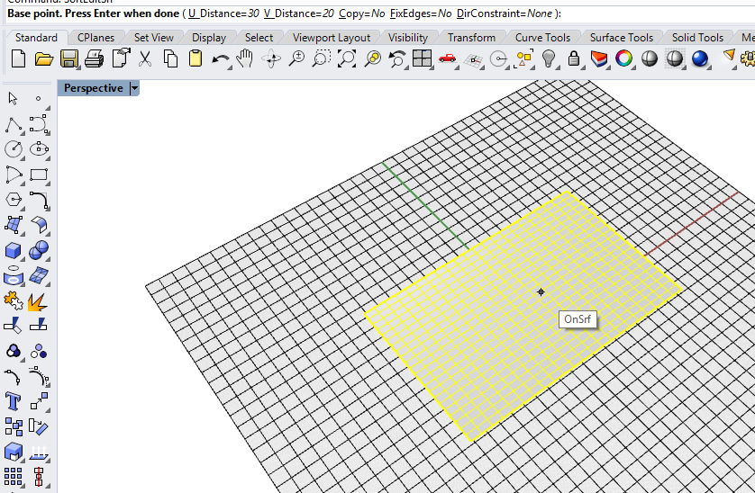dragging the points out
you can also do that by just Points on command. but one problem is it will not create the smooth contours, it will generate the pointed surface that I don’t want in my design( It is not bad but I don’t want it !).

final contour
After a while, I added my designed my final contour.

Extrusion
Extrude the surface and don’t forget to select solid Extrusion.

fit the box inside
Scaling down the model. I have to scale down a model to generate some extra cavity for mold, this cavity will be the walls for mold.
but I wanted to give more details in contour so I edited the file and made another one I just made mold design by Boolean difference and I like the mold more as the final output. so I decided to keep it. Final design I decided to
mill.

Rotation
The below image is the rotation of the main curve. I just wanted to see how it will look like, I created this profile with proper walls below there, the procedure of making a wall is the same.
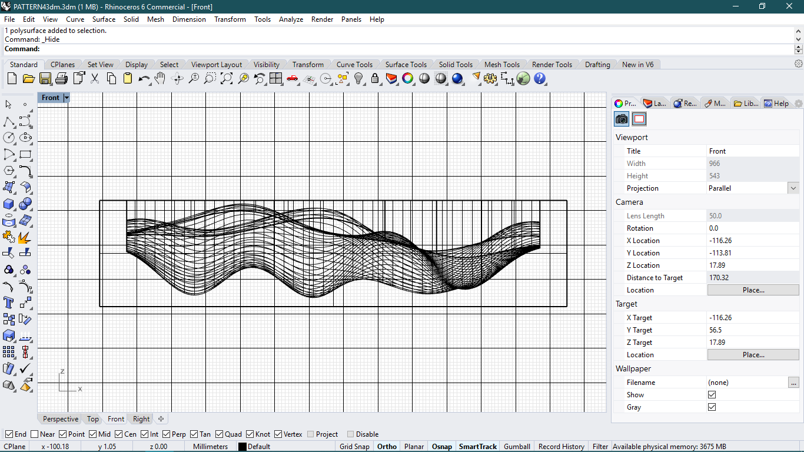Steps to make Profile
I made a profile by use of Boolean difference. You can see below my profiles up and downs are relatively change. it can be done so easily. let me show you.
- Make a solid rectangle (you can do it by making rectangle curve and then Extrusion(solid))
- Give Boolean difference command
- Profile will be upside down ! (Here I am making my previous profile with final one.)
- Make a border (If you want)

Convert into STL
Then I exported the file into stl format because I was going to use part works 3d and it supports stl formats for 3d millings.
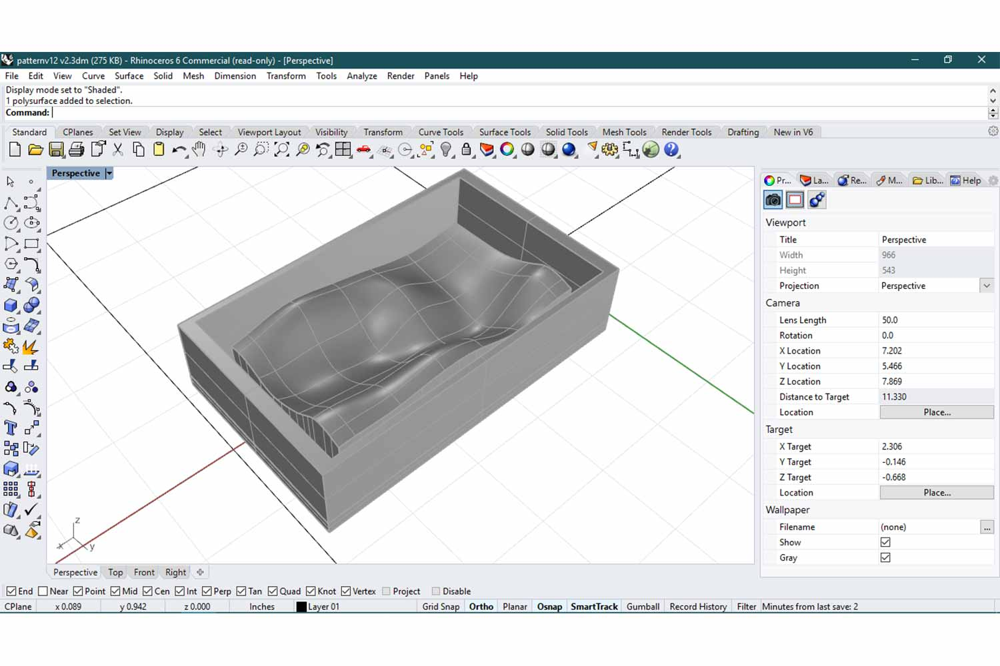Click here to download .stl file !
things to be care in Exporting
Make sure the unit system in rhino should be in inches while you are exporting the file, it may not create problems for part works but my friends using modela had such problems, their model got to scale up in inches.if model size is 15 mm in any software and then you convert it into stl and import it for milling it may show model of 15 inches long , means model scaled up !
these Warning is for all software which export model as .stl. For Fusion 360 which does not support .stl model directly , export it in step format and then got to software like rhino or AutoCAD , change the dimensions to inches if they are not , and export it to .stl .
partworks3d
part works software can be used for generate 2d and 3d cut paths for shobbot cnc machine. part works 3D is included with all new ShopBots and will take 3D models from programs such as Rhino or from Vector/3D clip art and create Part Files (tool paths) ready for 3D machining on your ShopBot. partworks 3D allows adjusting tool paths, will create roughing passes and will machine parts from one, two or four sides as well as insert bridging.
Import .stl file
as I written , in partworks3d one have to upload .stl file. Refer instructions above if you haven't

Orientate and size model
In this section you can change model size basically you can use this settings when you are working on the big models and just testing how it will work on that scale.
here you have some advantages in units , you can choose mm or inches in whatever unit you have uploaded model.
Material size and margins
Material size and margin is important section , because you can ruin your design if you haven’t paid attention on directions.
Problem is that you have to know whether your CNC machine and partworks axis are same or not , ours is not. So what happens here partworks generates cut file on the basis of length and width orientation. here
it will generate different types of cut operations in longitudinal and transvers direction (which is normal for rectangle cut files).
so even if you think axis
are the same their respective length and width are different and so you have to rotate the workpiece to align length and width
Here one have to change the orientation of the work piece while putting it on cnc machine you have to rotate it to 90 degree anticlockwise.
place the origin on the Top - left corner in material
size.
on the cnc machine you have to put zero at bottom left since materialism rotated 90 degree . see CNC images to understand better
Roughing toolpath
I was going to use 1/8th end and ball nose mill for cut.
Finishing toolpath
I will recommend to pay attention on step over parameter. it will main parameter to define horizontal error and surface finish in final cutting.
I did one mistake here , in finishing if one increase the rpm-speed and decrease the feed rate will increase the surface finish , but I did inverse. I was little concern about wax melting though.
Step over is distance between two individual toolpaths, if your step over will be 100% (100% of the tool diameter) , the next tool path will be 100% away from the adjacent one. and it will leave some uncut material in between.
preview of toolpaths
these are the preview of milling.
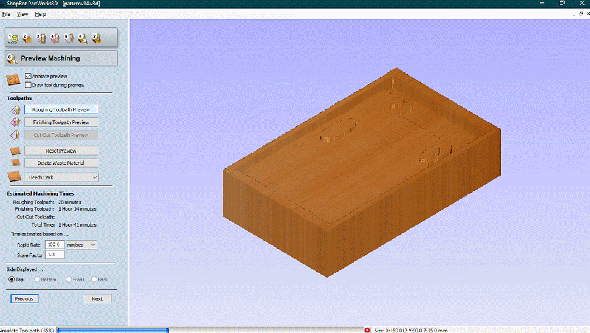 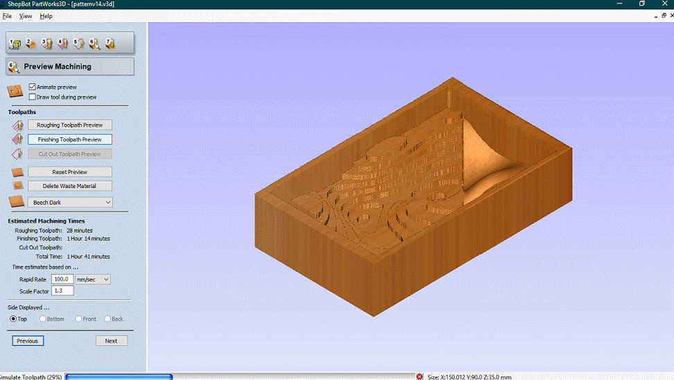Save the toolpaths
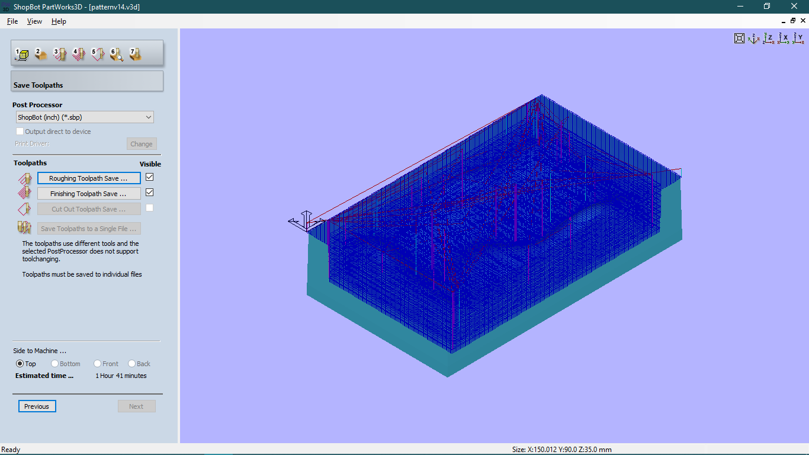On cnc
Preparing the Molding wax for cnc work. Using 3M tap to stick it on MDF noard.

pictures of 1/8th end mill and ball nose.

orientation changes on cnc
as I try to explain , I rotated my Wax 90 degree. after that I set the zero to lower left , then I go for milling. you can see milling operation on Week8.

Rough cut
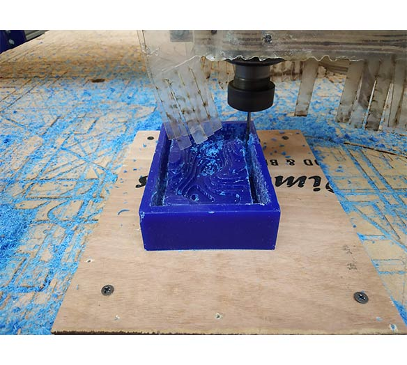
final cut

Preparing the master pattern for molding
I am using vaseline here so mold material can be removed easily

Adding mixture of smoothon oomoo-30
Click here to see product details. Tin Cure Silicone Rubber w
OOMOO 30 has negligible shrinkage.
Volume ratio part A : part B , 1A : 1B
weight ration 100A : 130B
OOMOO 30 has a 30-minute pot life, with a six-hour cure time.

Adding part 1
My mold approximately need 300 gm of mixture. so I mixed 140 gm of PART A and PART B of 160 gm.
Part : A

Part : B

Mix it properly
After pouring the two parts , mix it properly ,Initially the mixture will be very thick and it will be difficult to mix in some case , but it is sign that it is not mixed properly, but after sometime it will be very smooth and its color will be changed to light blue.
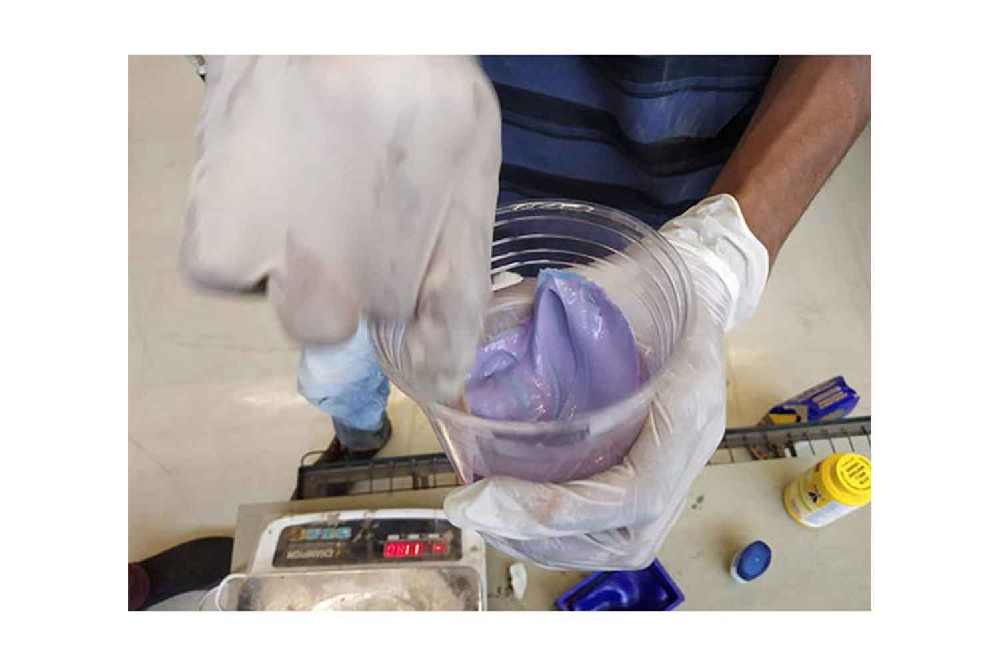Filling the master pattern
One suggestion I got it to try to clear the mold at sides , because when it covers the side it will be difficult to remove it .
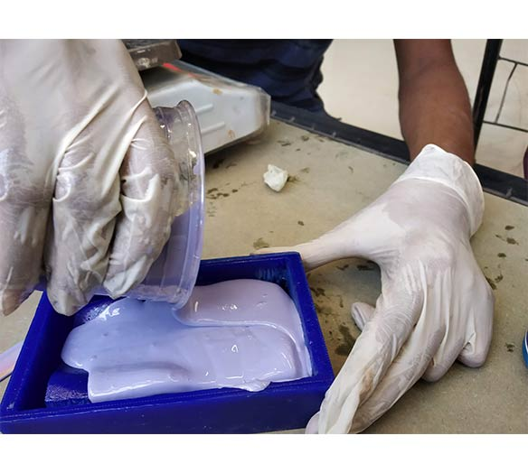
Remove globus properly. Silicon should not touch hands.
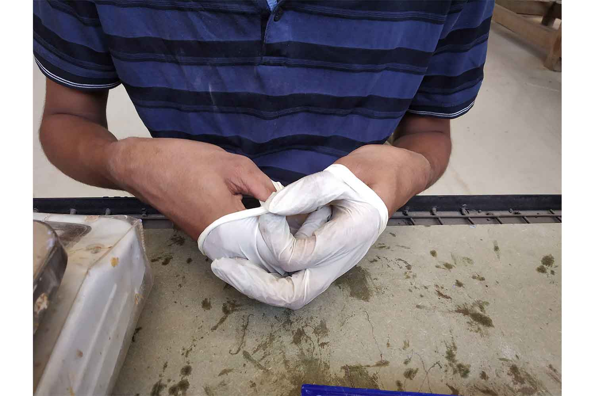Replica is ready


Material : smooth on cast 300
The Smooth-Cast® 300 Series of liquid plastics are ultra-low viscosity casting resins that yield castings that are bright white and virtually bubble free.
Fully cured castings are tough, durable, machinable and paintable. They resist moisture and mild solvents. Applications for Smooth-Cast® 300 Series Liquid Plastics include reproducing small to medium size sculptures, making prototype
models, special effect props and decorative jewelry.
Replica
Result was Awesome. it was very delightful to get these smooth surface. but things to be care in poring the mixture , it starts to set on 3 minutes , mixture becomes hot and turns it color to milky white.
 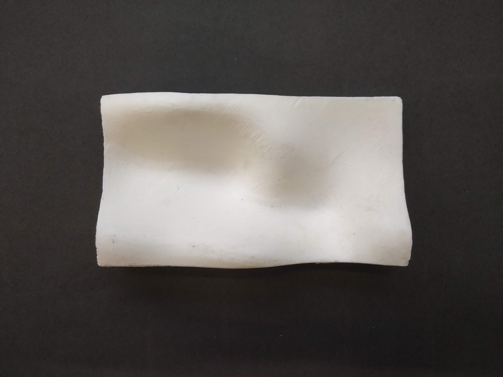
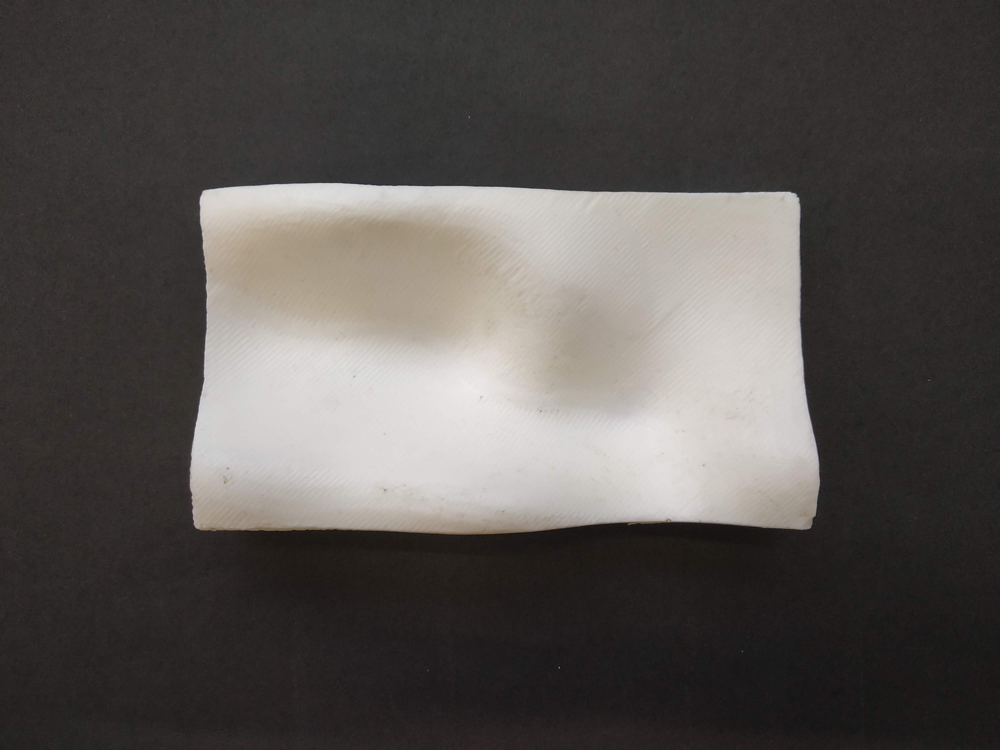

Material : smoothon cast 305
click here to direct material page.
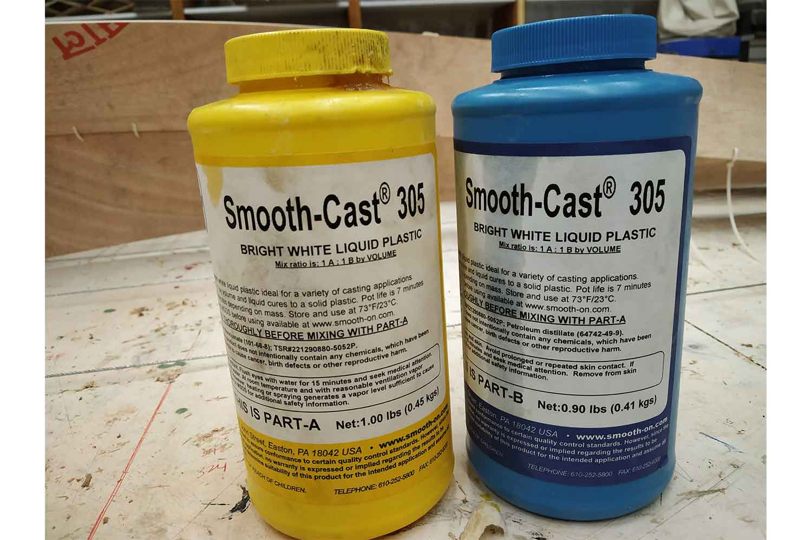Result
Quality is not good as smooth on 305 , while mixing mixture transfers to transparent liquid , temperature rises and take white color during solidifying it will start to expand.


Final Output
No dout smooth cast is better in surface Finishing. Both replicas where quite strong.

Group work
The assignment was to read the safety data sheet for different casting material and make a test cast with them. As a contribution I prepared mold which is used in group work ! we tried different materials like Dry Stone, HydroStone, Smooth cast-300, Smooth cast-305Click here to redirect on group website
Conclusion
This week bring something new for me , I learn how can I do 3d milling , what types of creative textures machine can do , parameters that should be taken care on the m3d milling , lately I realized I can do roughing and
finishing only with one tool , by just setting stepover and feed rate. lower the step over , finer finishing will be.
In molding part , it was very good experience , I got to know about different materials and parameters
in mold and I also want to explore it more in future.